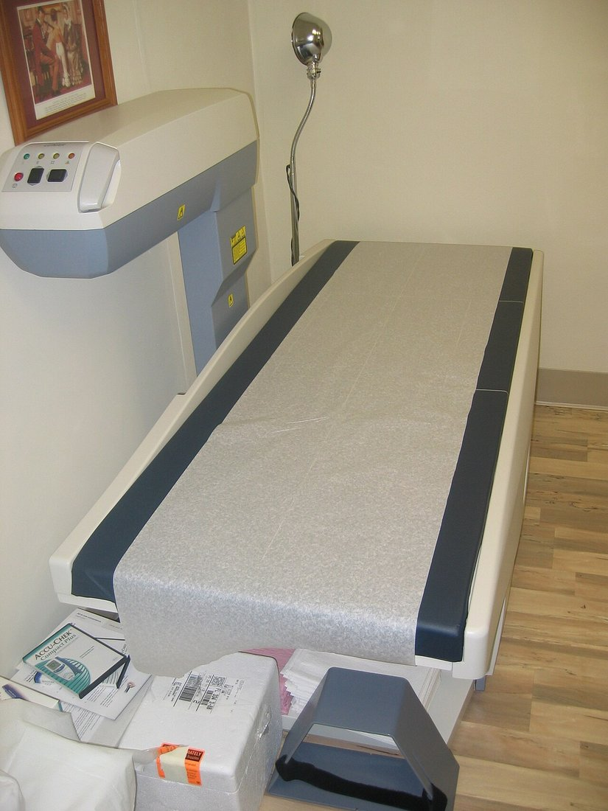
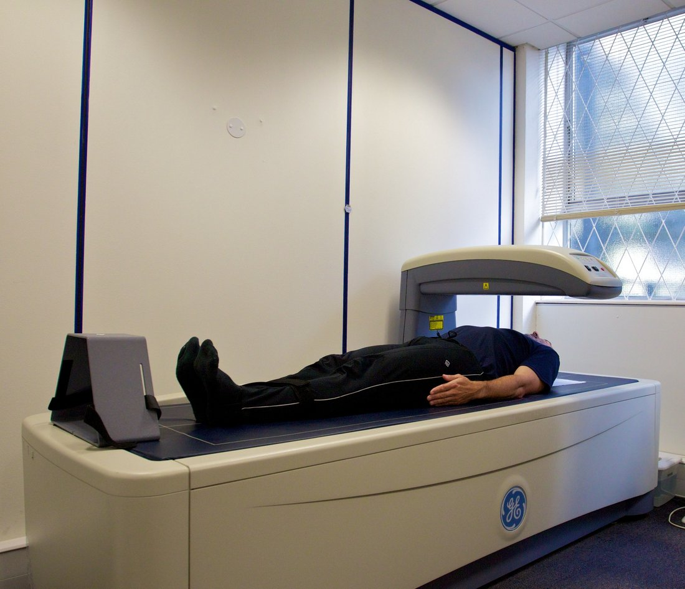
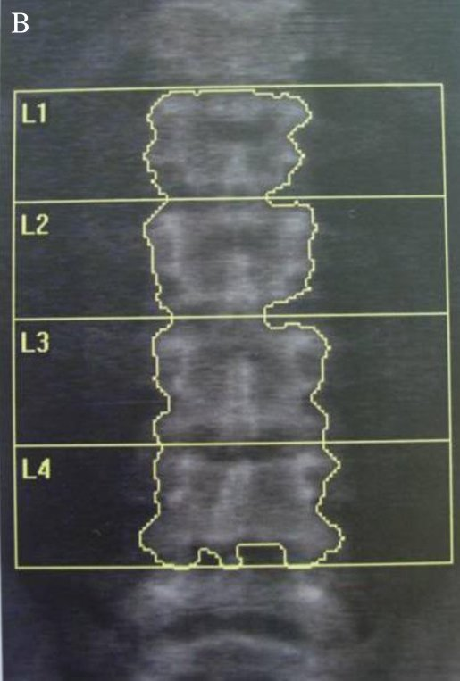
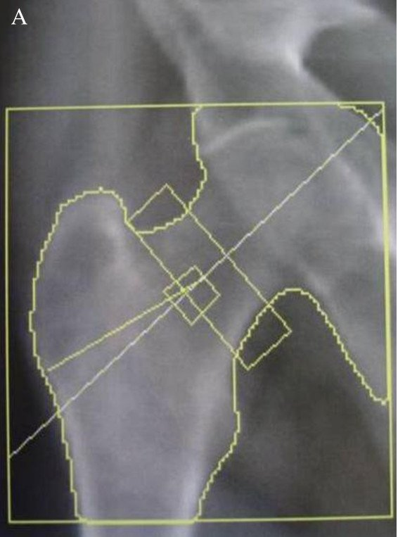
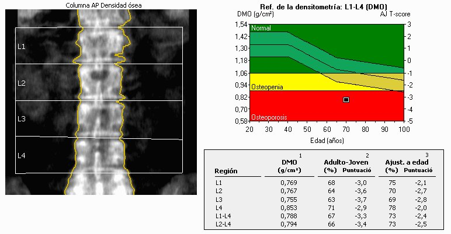

قياس كثافة العظام
DEXA / DXA = Dual-energy X-ray Absorptiometry: فحص بسيط وغير مؤلم يقيس كثافة المعادن في العظم (BMD).
وحدة القياس: g/cm². وهو غير bone scan الطب النووي.

لا صيام ولا حقن. الفحص نفسه حوالي 10 دقائق والمريض مستلقٍ على ظهره.
القياس يكون للعمود والورك معاً عند كل المرضى، وبنفس الوضعية في كل مرة للمقارنة.



T-score: مقارنة بكثافة شاب بالغ سليم. يُستعمل للنساء بعد سن اليأس وللرجال ≥ 50 سنة، وعليه يُبنى تصنيف WHO.
Z-score: مقارنة بشخص بنفس العمر والجنس. يُستعمل للنساء قبل سن اليأس، والرجال < 50 سنة، والأطفال. قيمة ≤ −2.0 = «أقل من المتوقع للعمر».
يؤخذ أقل رقم بين العمود الفقري والورك (وعنق الفخذ).
| WHO | T-score |
|---|---|
| Normal طبيعي | ≥ −1.0 |
| Osteopenia (low bone mass) نقص الكتلة العظمية | بين −1.0 و −2.5 (أقل من −1.0 وأعلى من −2.5) |
| Osteoporosis هشاشة العظام | ≤ −2.5 |
| Severe (established) osteoporosis هشاشة شديدة (مؤكدة) | ≤ −2.5 + كسر هشاشة |

الجرعة قليلة جداً: بضع ميكروسيفرت فقط (µSv).